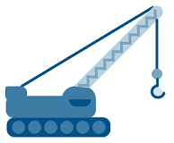
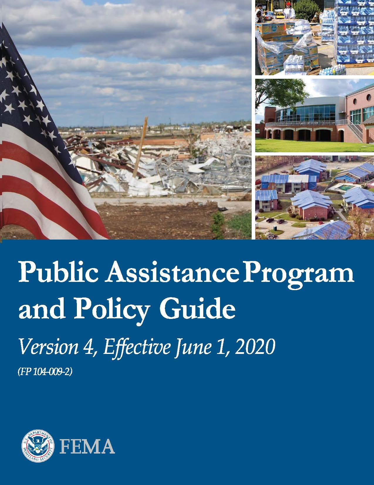

<!DOCTYPE html>
<html lang="tl" dir="ltr" prefix="og: https://ogp.me/ns#">
  <head>
    <meta charset="utf-8" />
<script async src="https://www.googletagmanager.com/gtag/js?id=UA-29391347-1"></script>
<script>window.dataLayer = window.dataLayer || [];function gtag(){dataLayer.push(arguments)};gtag("js", new Date());gtag("set", "developer_id.dMDhkMT", true);gtag("config", "UA-29391347-1", {"groups":"default","anonymize_ip":true,"page_placeholder":"PLACEHOLDER_page_path","allow_ad_personalization_signals":false});</script>
<meta name="description" content="FEMA’s Public Assistance Program provides supplemental grants to state, tribal, territorial, and local governments, and certain types of private non-profits so communities can quickly respond to and recover from major disasters or emergencies." />
<link rel="canonical" href="../../assistance/public/index.html" />
<meta property="og:title" content="Assistance for Governments and Private Non-Profits After a Disaster" />
<meta property="og:description" content="FEMA’s Public Assistance Program provides supplemental grants to state, tribal, territorial, and local governments, and certain types of private non-profits so communities can quickly respond to and recover from major disasters or emergencies." />
<meta property="og:image" content="https://www.fema.gov/sites/default/files/2020-04/fema_logo_horizontal.png" />
<meta name="facebook-domain-verification" content="99gx41o8o8q3mrsvbvml6ji6xmwzdn" />
<meta name="Generator" content="Drupal 10 (https://www.drupal.org)" />
<meta name="MobileOptimized" content="width" />
<meta name="HandheldFriendly" content="true" />
<meta name="viewport" content="width=device-width, initial-scale=1.0" />
<link rel="icon" href="https://www.fema.gov/profiles/femad8_gov/themes/fema_uswds/images/favicon.ico" type="image/vnd.microsoft.icon" />

          <title>Assistance for Governments and Private Non-Profits After a Disaster | FEMA.gov</title>
          <link rel="stylesheet" media="all" href="https://www.fema.gov/sites/default/files/css/css__FKaGugFQSIvWkGXSm7uaaFK_ePNbPcjEiZEf1QzM6I.css?delta=0&amp;language=tl&amp;theme=fema_uswds&amp;include=eJx1kQGOhCAMRS-EciRSoCqxUENxXPf0y4gbJ2NMCOl__YVCLbjZFK5r0faKTXCclOxSMFYuqFbZvGif1wVIOQKRXUcUgRFFOc6oE-cIFH5RDRjBtIKR2AJ1UnYKafzMDJyKqIyycJLwQlPAEooZAhXMuinYuqYV_pR6wnx20J9SvV0LwV4rrlC5iQXTv7epExoKVrewdyLqFXATfex9ZL_S2b5lno0DIl6LtsRu7t6mlnzkE7qZgtwzGDEDeTOuBZPFPN4cA0JZ6zc-cBNDCk9Jb6TU4aG_Ga77LjYh-DqMm_f43294zOGTfr1ADvoH9PvioA" />
<link rel="stylesheet" media="all" href="https://www.fema.gov/sites/default/files/css/css_L7-tv93CNTPlL-JIkx8KX_5i_vQL_LUzmUQ807CTCsA.css?delta=1&amp;language=tl&amp;theme=fema_uswds&amp;include=eJx1kQGOhCAMRS-EciRSoCqxUENxXPf0y4gbJ2NMCOl__YVCLbjZFK5r0faKTXCclOxSMFYuqFbZvGif1wVIOQKRXUcUgRFFOc6oE-cIFH5RDRjBtIKR2AJ1UnYKafzMDJyKqIyycJLwQlPAEooZAhXMuinYuqYV_pR6wnx20J9SvV0LwV4rrlC5iQXTv7epExoKVrewdyLqFXATfex9ZL_S2b5lno0DIl6LtsRu7t6mlnzkE7qZgtwzGDEDeTOuBZPFPN4cA0JZ6zc-cBNDCk9Jb6TU4aG_Ga77LjYh-DqMm_f43294zOGTfr1ADvoH9PvioA" />
<link rel="stylesheet" media="all" href="https://fonts.googleapis.com/css?family=Merriweather:400,700|Source+Sans+Pro:200,400,600,700&amp;display=swap" />
<link rel="stylesheet" media="all" href="https://www.fema.gov/sites/default/files/css/css_cdueCvJ7kcH-hRclMjxGdYrxYqfX35GpCtyK5CcsOEw.css?delta=3&amp;language=tl&amp;theme=fema_uswds&amp;include=eJx1kQGOhCAMRS-EciRSoCqxUENxXPf0y4gbJ2NMCOl__YVCLbjZFK5r0faKTXCclOxSMFYuqFbZvGif1wVIOQKRXUcUgRFFOc6oE-cIFH5RDRjBtIKR2AJ1UnYKafzMDJyKqIyycJLwQlPAEooZAhXMuinYuqYV_pR6wnx20J9SvV0LwV4rrlC5iQXTv7epExoKVrewdyLqFXATfex9ZL_S2b5lno0DIl6LtsRu7t6mlnzkE7qZgtwzGDEDeTOuBZPFPN4cA0JZ6zc-cBNDCk9Jb6TU4aG_Ga77LjYh-DqMm_f43294zOGTfr1ADvoH9PvioA" />

    <script type="application/json" data-drupal-selector="drupal-settings-json">{"path":{"baseUrl":"\/","pathPrefix":"tl\/","currentPath":"node\/369654","currentPathIsAdmin":false,"isFront":false,"currentLanguage":"tl","femaLinkPath":"profiles\/femad8_gov\/modules\/custom\/fema_gutenberg\/modules\/fema_link"},"pluralDelimiter":"\u0003","suppressDeprecationErrors":true,"back_to_top":{"back_t"  class="">
                  <span>Tools and Resources</span>
                </a>
              
              
            </li>
                  
                                        
                    
          
                    
                                          <li id="menu_link_content:b2e7ae41-23b4-4655-bfdc-7256fc95a0c9" class="usa-sidenav__item on-active-level  indented child">

                              <a  href="https://www.fema.gov/tl/assistance/public/library"  class="">
                  <span>Resource Library</span>
                </a>
              
              
            </li>
                  
                                        
                    
          
                    
                                          <li id="menu_link_content:3ee11b2a-94b2-4867-a3d8-fb5a64baa81a" class="usa-sidenav__item on-active-level  indented child">

                              <a  href="https://www.fema.gov/tl/node/634347"  class="">
                  <span>Audits, Arbitration and Appeals</span>
                </a>
              
              
            </li>
                  
                                        
                    
          
                    
                                          <li id="menu_link_content:4da6dcf7-eaa8-4489-ada9-6a14404995b0" class="usa-sidenav__item on-active-level  indented child">

                              <a  href="https://www.fema.gov/tl/node/445306"  class="">
                  <span>Community Disaster Loan Program</span>
                </a>
              
              
            </li>
                  
                                        
                    
          
                    
                                          <li id="menu_link_content:87ca5c55-adc5-451a-8c98-ad9ae5892f21" class="usa-sidenav__item on-active-level  indented child">

                              <a  href="https://www.fema.gov/tl/assistance/public/fire-management-assistance"  class="">
                  <span>Fire Management Assistance Grants</span>
                </a>
              
              
            </li>
                  
                                        
                    
          
                    
                                          <li id="menu_link_content:0f4ab87b-f8c8-43b4-a5db-48be9599c478" class="usa-sidenav__item on-active-level  indented child">

                              <a  href="https://www.fema.gov/tl/node/644036"  class="">
                  <span>Simplifying the Program</span>
                </a>
              
              
            </li>
                  
                                        
                    
          
                    
                                          <li id="menu_link_content:cc4aa062-67aa-426f-a0e1-a13a1139f2de" class="usa-sidenav__item on-active-level  indented child">

                              <a  href="https://www.fema.gov/tl/node/670189"  class="">
                  <span>Public Assistance Hazard Mitigation</span>
                </a>
              
              
            </li>
                  
                
                                </ul>

              
            </li>
                  
                                        
                    
          
                    
                            
                                                    <li id="menu_link_content:e1e38b85-9e2a-4e40-a005-20ae843d6050" class="usa-sidenav__item usa-sibling-li on-active-level indented">
                <a  href="../node/687529.html" >
                  <span>Businesses</span>
                </a>
              </li>
                                                                      <li id="menu_link_content:93183adc-ca38-485e-82c1-68d2c06aabb8" class="usa-sidenav__item usa-sibling-li on-active-level indented">
                <a  href="individual.html" >
                  <span>Indibidwal na Tulong</span>
                </a>
              </li>
                              
                                                            <li id="menu_link_content:da11fc1d-da4e-44fc-aeed-a299c3233b2d" class="usa-sidenav__item usa-sibling-li on-active-level parent-sibling">
                  <a  href="../node/575622.html" >
                    <span>Current Disasters</span>
                  </a>
                </li>
                                                                                  <li id="menu_link_content:5ea786f5-17ea-43f7-bf8c-87ebffea237d" class="usa-sidenav__item usa-sibling-li on-active-level parent-sibling">
                  <a  href="../disaster/recover.html" >
                    <span>Tools to Recover</span>
                  </a>
                </li>
                                                        <li id="menu_link_content:e895e6ac-d82d-40a9-925e-5b829d5137d4" class="usa-sidenav__item usa-sibling-li on-active-level parent-sibling">
                  <a  href="../node/471154.html" >
                    <span>General Disaster Information</span>
                  </a>
                </li>
                                                  </ul>

              
            </li>
                  
                                        
                    
          
                    
                            
                                        
                    
          
                    
                            
                
              </ul>

              
            </li>
                  
                                        
                    
          
                    
                            
                                        
                    
          
                    
                            
                                        
                    
          
                    
                            
                                        
                    
          
                    
                            
                                        
                    
          
                    
                            
                
                                </ul>


             </div>
          </aside>
    </div>


                      </div>
          <div class="desktop:grid-col-9" role="main">

            <!-- Hero (within content area) -->
            

                        <div class="region-content">
            <div class="grid-container">
                <div data-drupal-messages-fallback class="hidden"></div><div role="contentinfo" aria-label="Warning message">

    <div class="fema-callout fcf6f6 alert language-warning warning">
  
                      <p class="call-out-text">
          This page has not been translated into Tagalog. Visit the <a href='../disaster/recover/languages.html'>Tagalog page</a> for resources in that language.
        </p>
              
    
  </div>
</div>
<div id="block-fema-uswds-pagetitle-2" class="block block-core block-page-title-block">
  
    
      
  <h1 class="uswds-page-title page-title"><span class="field field--name-title field--type-string field--label-hidden">Assistance for Governments and Private Non-Profits After a Disaster</span>
</h1>


  </div>
<div class="views-element-container block block-views block-views-blocktranslations-available-block-1" id="block-views-block-translations-available-block-1">
  
    
      <div><div class="view view-translations-available view-id-translations_available view-display-id-block_1 js-view-dom-id-b7f536395e345eece537ee6bbb0305527c0634313330f70b18ed0df6c573607d">
  
    
      
      <div class="view-content">
      <div class='incident-view-page-in'>
<div>

<ul>
    <li><span><a href="../../assistance/public/index.html">English</a></span>

</li>
    <li><span><a href="../../es/assistance/public.html">Español</a></span>

</l../../ht/assistance/public.html">Kreyòl</a></span>

</li>
    <li><span><a href="../../ko/assistance/public.html">한국어</a></span>

</li>
    <li><span><a href="../../vi/assistance/public.html">Tiếng Việt</a></span>

</li>
    <li><span><a href="../../zh-hans/assistance/public.html">简体中文</a></span>

</li>
</ul>
</div>
</div>

    </div>
  
          </div>
</div>

  </div>
<div id="block-covidclosedenglish" class="block block-block-content block-block-content136dd9b9-1319-47d6-bb60-cd1a6ae046e9">
  
    
      
            <div class="clearfix text-formatted field field--name-body field--type-text-with-summary field--label-hidden field__item"><div class="fema-callout fafbf7 alert">
<p>Ang panahon ng insidente ng COVID-19 ay natapos noong Mayo 11, 2023. Ang FEMA ay patuloy na magbibigay ng tulong sa palibing hanggang Setyembre 30, 2025, sa mga nawalan ng mahal sa buhay dahil sa pandemyang ito.</p>
</div>
</div>
      
  </div>
<div id="block-fema-uswds-mainpagecontent-2" class="block block-system block-system-main-block">
  
    
      <article lang="en">

  
    

  
  <div class="content-inner-container">

    
    
            <div class="clearfix text-formatted field field--name-body field--type-text-with-summary field--label-hidden field__item">
<p>FEMA’s Public Assistance Program provides supplemental grants to state, tribal, territorial, and local governments, and certain types of&nbsp;private non-profits so communities can quickly respond to and recover from major disasters or emergencies.  </p>


<div class="wp-block-columns are-vertically-aligned-center">
<div class="wp-block-column is-vertically-aligned-center" style="flex-basis:66.66%">
<p>After an event like a hurricane, tornado, earthquake or wildfire, communities need help to cover their costs for debris removal, life-saving emergency protective measures, and restoring public infrastructure.</p>


<p>FEMA also encourages protecting these damaged facilities from future events by providing&nbsp;assistance for hazard mitigation&nbsp;measures during the recovery process.</p>
</div>


<div class="wp-block-column is-vertically-aligned-center" style="flex-basis:33.33%">
<div class="wp-block-fema-feature feature_standalone"><div class="feature_standalone_blocks">
<p><strong>GRANTS PORTAL</strong></p>


<p>Applicants, recipients and subrecipents login: <a rel="noreferrer noopener" href="https://grantee.fema.gov/" target="_blank">grantee.fema.gov</a>.</p>
</div></div>
</div>
</div>


<div class="wp-block-fema-feature feature_standalone"><div class="feature_standalone__image--processed"><article class="contextual-region media media--type-graphics media--view-mode-default">
  <div data-contextual-id="media:media=32616:changed=1723577861&amp;langcode=en" data-contextual-token="Q4RNVsjhSwOx8-payaw8Li4gB04M3GzBLEMMzsiQD5I" data-drupal-ajax-container></div>
      
  <div class="field field--name-field-media-image-1 field--type-image field--label-visually_hidden">
    <div class="field__label visually-hidden">Graphic</div>
              <div class="field__item">  

</div>
          </div>

  </article>
</div><div class="feature_standalone_blocks">
<div class="fema-heading"><h3 class>Public Assistance Mitigation Cost Share Incentives (PAMCSI) Policy</h3></div>


<p>FEMA is seeking public comment on the Public Assistance Mitigation Cost Share Incentives Policy. The interim policy is effective for major disasters declared on or after Sept. 26, 2024, and FEMA will accept public comments on the policy for 120 days.</p>


<a class="fema-link" href="../../event/public-assistance-mitigation-cost-share-incentives-pamcsi-policy.html"><p>Learn More</p></a>
</div></div>


<h2 id="eligibility">Eligibility for Public Assistance Grant Funding</h2>


<p>The four basic components of eligibility are <strong>applicant</strong>, <strong>facility</strong>, <strong>work</strong> and <strong>cost</strong>.</p>


<div class="wp-block-columns">
<div class="wp-block-column is-vertically-aligned-center">
<div class="wp-block-fema-feature-mini feature_mini"><div class="feature_mini__image--processed"><article class="contextual-region media media--type-graphics media--view-mode-default">
  <div data-contextual-id="media:media=4561:changed=1706058087&amp;langcode=en" data-contextual-token="axvMSxVGQ0JnbzYAXXhFfRB_zUpBIc_qDTA57_pt1gk" data-drupal-ajax-container></div>
      
  <div class="field field--name-field-media-image-1 field--type-image field--label-visually_hidden">
    <div class="field__label visually-hidden">Graphic</div>
              <div class="field__item">  

</div>
          </div>

  </article>
</div><div class="feature_mini_blocks">
<p>An <strong>applicant</strong> must be a state, territory, tribe, local government or private nonprofit organization.</p>
</div></div>
</div>


<div class="wp-block-column is-vertically-aligned-center">
<div class="wp-block-fema-feature-mini feature_mini"><div class="feature_mini__image--processed"><article class="contextual-region media media--type-graphics media--view-mode-default">
  <div data-contextual-id="media:media=26686:changed=1706213025&amp;langcode=en" data-contextual-token="sBqfc8bWfRIS1boPKHJEAzc_YEWgNHf3jh1lF9ew-UI" data-drupal-ajax-container></div>
      
  <div class="field field--name-field-media-image-1 field--type-image field--label-visually_hidden">
    <div class="field__label visually-hidden">Graphic</div>
              <div class="field__item">  

</div>
          </div>

  </article>
</div><div class="feature_mini_blocks">
<p>A&nbsp;<strong>facility</strong>&nbsp;must be a building, public works system, equipment or natural feature.</p>
</div></div>
</div>
</div>


<div class="wp-block-fema-feature-mini feature_mini"><div class="feature_mini__image--processed"><article class="contextual-region media media--type-graphics media--view-mode-default">
  <div data-contextual-id="media:media=26687:changed=1706220704&amp;langcode=en" data-contextual-token="1-KN5NrAXkZHQKlxNmzkH3WJVe1DiEIVxUgQguumSDc" data-drupal-ajax-container></div>
      
  <div class="field field--name-field-media-image-1 field--type-image field--label-visually_hidden">
    <div class="field__label visually-hidden">Graphic</div>
              <div class="field__item">  

</div>
          </div>

  </article>
</div><div class="feature_mini_blocks">
<p><strong>Work</strong> is categorized as either "emergency" or "permanent." It must be required as a result of the declared incident, located within the designated disaster area, and is the legal responsibility of the applicant.</p>
</div></div>


<div class="wp-block-fema-feature-mini feature_mini"><div class="feature_mini__image--processed"><article class="contextual-region media media--type-graphics media--view-mode-default">
  <div data-contextual-id="media:media=4549:changed=1706221318&amp;langcode=en" data-contextual-token="b7-1q7oMTVtvTkVghRaNEGGhtxuhD5ujirA16HI6EZU" data-drupal-ajax-container></div>
      
  <div class="field field--name-field-media-image-1 field--type-image field--label-visually_hidden">
    <div class="field__label visually-hidden">Graphic</div>
              <div class="field__item">  

</div>
          </div>

  </article>
</div><div class="feature_mini_blocks">
<p><strong>Cost</strong> is the funding tied directly to eligible work, and must be adequately documented, authorized, necessary and reasonable. Eligible costs include labor, equipment, materials, contract work, as well as direct and indirect administrative costs.</p>
</div></div>


<div class="fema-callout fafbf7 arrow">
<p><a href="../../assistance/public/program-overview.html#eligibility">View the full eligibility details and requirements</a>.</p>
</div>


<h2>Get Started</h2>


<div class="wp-block-columns">
<div class="wp-block-column">
<div class="fema-heading"><h3 class><a href="../../assistance/public/program-overview.html">Process of Public Assistance</a></h3></div>


<p>Overview of the process from when the disaster is declared to closeout of the grant.  </p>


<div class="wp-block-group"><div class="wp-block-group__inner-container">
<div class="fema-heading"><h3 class><a href="../../assistance/public/appeals.html">Audits, Arbitration and Appeals</a></h3></div>


<p>Overview of the appeals and audit process, including the&nbsp;searchable database of FEMA responses to applicant appeals for assistance.</p>
</div></div>


<div class="wp-block-group"><div class="wp-block-group__inner-container">
<div class="fema-heading"><h3 class><a href="../../assistance/public/community-disaster-loan.html">Community Disaster Loan Program</a></h3></div>


<p>The Community Disaster Loan Program provides funding for local governments to operate their essential community services after substantial revenue loss caused by a disaster.</p>


<div class="fema-heading"><h3 class><a href="../../assistance/public/policy-guidance-fact-sheets.html">Public Assistance Resource Libraries</a></h3></div>
</div></div>


<p>Official guidance, policies, news advisories and related publications that govern the program.</p>
</div>


<div class="wp-block-column">
<div class="fema-heading"><h3 class><a href="../../assistance/public/hazard-mitigation.html">Public Assistance Hazard Mitigation</a></h3></div>


<p>Public Assistance hazard mitigation provides funding to protect damaged public infrastructure from future events and helps communities build back better.</p>


<div class="wp-block-group"><div class="wp-block-group__inner-container">
<div class="fema-heading"><h3 class><a href="../../assistance/public/apply.html">How to Apply</a></h3></div>


<p>Video tutorials and tips to guide the process of applying for a Public Assistance grant.</p>
</div></div>


<div class="fema-heading"><h3 class><a href="../../simplifying-public-assistance-program.html">Simplifying the Public Assistance Program</a></h3></div>


<p>Find information on how FEMA is improving Public Assistance. </p>


<div class="fema-heading"><h3 class><a href="https://www.fema.gov/assistance/public/process/debris-removal">Debris Removal</a></h3></div>


<p>Get guidance on debris removal activities for state, local, tribal and territorial governments.</p>
</div>
</div>


<div class="wp-block-fema-feature feature_standalone"><div class="feature_standalone__image--processed"><article class="contextual-region media media--type-graphics media--view-mode-default">
  <div data-contextual-id="media:media=24340:changed=1703203027&amp;langcode=en" data-contextual-token="8J7KX93SsX4jgHd1nuf65xomDCI18ik89qVn_E0cepE" data-drupal-ajax-container></div>
      
  <div class="field field--name-field-media-image-1 field--type-image field--label-visually_hidden">
    <div class="field__label visually-hidden">Graphic</div>
              <div class="field__item">  

</div>
          </div>

  </article>
</div><div class="feature_standalone_blocks">
<div class="fema-heading"><h3 class><a href="../../assistance/public/fire-management-assistance.html">Fire Management Assistance Grants</a></h3></div>


<p>Funding for the mitigation, management and control of fires on publicly or privately owned forests or grasslands.</p>
</div></div>


<div class="fema-heading"><h2 class>Tools and Resources</h2></div>


<div class="fema-heading"><h3 class>Featured Downloads</h3></div>


<div class="wp-block-fema-feature-mini feature_mini"><div class="feature_mini__image--processed"><article class="contextual-region media media--type-graphics media--view-mode-default">
  <div data-contextual-id="media:media=26684:changed=1706223118&amp;langcode=en" data-contextual-token="W51BnH9ZQ3ynDYau0PbYiUAKdVhS86lbBjao5va-RJY" data-drupal-ajax-container></div>
      
  <div class="field field--name-field-media-image-1 field--type-image field--label-visually_hidden">
    <div class="field__label visually-hidden">Graphic</div>
              <div class="field__item">  

</div>
          </div>

  </article>
</div><div class="feature_mini_blocks">
<p></p>


<p class="has-medium-font-size"><a rel="noreferrer noopener" href="../../sites/default/files/documents/fema_pappg-v4-updated-links_policy_6-1-2020.pdf" data-type="URL" data-id="/sites/default/files/documents/fema_pappg-v4-updated-links_policy_6-1-2020.pdf" target="_blank"><strong>Public Assistance Program &amp; Policy Guide (PAPPG)</strong></a></p>


<p>Version&nbsp;4&nbsp;of FEMA's PAPPG is applicable&nbsp;to emergencies&nbsp;and major&nbsp;disasters declared on or after&nbsp;June 1, 2020.</p>
</div></div>


<div class="wp-block-fema-feature-mini feature_mini"><div class="feature_mini__image--processed"><article class="contextual-region media media--type-graphics media--view-mode-default">
  <div data-contextual-id="media:media=5447:changed=1706225795&amp;langcode=en" data-contextual-token="DbD0dKSwx7DnsiiBpzT4ktPBhBkh_gQGE8DMdabqJco" data-drupal-ajax-container></div>
      
  <div class="field field--name-field-media-image-1 field--type-image field--label-visually_hidden">
    <div class="field__label visually-hidden">Graphic</div>
              <div class="field__item">  

</div>
          </div>

  </article>
</div><div class="feature_mini_blocks">
<p class="has-medium-font-size"><a href="../../sites/default/files/documents/fema_pa-simplified-procedures-policy.pdf" data-type="URL" data-id="/sites/default/files/documents/fema_pa-simplified-procedures-policy.pdf"><strong>Public Assistance Simplified Procedures Policy</strong></a></p>


<p>This policy streamlines application procedure for Small Project funding under the PA program to simplify implementation of the PA program and support rapid recovery for Applicants.</p>
</div></div>


<p>Explore resources to help with the application and appeals process, including:</p>


<div class="wp-block-columns">
<div class="wp-block-column">
<ul><li>Cooperative Purchasing Programs</li><li>Cost Estimating Tools</li><li>Forms</li></ul>
</div>


<div class="wp-block-column">
<ul><li>Per Capita Impact Indicator</li><li>Procurement and Contracting</li><li>Schedule of Equipment Rates</li></ul>
</div>


<div class="wp-block-column">
<ul><li>Statistics</li><li>Training</li><li>VAYGo</li><li>Worksheets</li></ul>
</div>
</div>


<a class="fema-link" href="../../assistance/public/tools-resources-statistics.html"><p>Access Our Suite of Tools</p></a>
</div>
      
  </div>

</article>

  </div>
<div class="views-element-container block block-views block-views-blockupdated-date-view-block-block-1" id="block-views-block-updated-date-view-block-block-1">
  
    
      <div><div class="view view-updated-date-view-block view-id-updated_date_view_block view-display-id-block_1 js-view-dom-id-62a82c524c7e7c2019554c6e2c872cd3ca5055fb95160106d05aa3216ce7f22b">
  
    
      
  
          </div>
</div>

  </div>

            </div>
         </div>
  
            <div class="grid-container usa-footer__return-t"public.html#">Bumalik sa itaas</a>
            </div>
          </div>
        </div>
      </div>
    </div>


      </div>


</main>

<footer class="usa-footer usa-footer--medium" role="contentinfo">
      <div class="footer-top">
  <div class="grid-container ">
    <div class="grid-row">
              <nav class="" aria-label="Footer navigation">
            <div class="region region-footer-menu">
    

    
                <ul class="grid-row grid-gap add-list-reset">
        
    
                  <li class="usa-footer__primary-content">
        <a href="../node/575622.html" class="usa-footer__primary-link" data-drupal-link-system-path="node/575622">Disasters &amp; Assistance</a>
      </li>
      
    
                  <li class="usa-footer__primary-content">
        <a href="../grants.html" class="usa-footer__primary-link" data-drupal-link-system-path="node/401141">Grants</a>
      </li>
      
    
                  <li class="usa-footer__primary-content">
        <a href="../flood-insurance.html" class="usa-footer__primary-link" data-drupal-link-system-path="node/401548">Floods &amp; Maps</a>
      </li>
      
    
                  <li class="usa-footer__primary-content">
        <a href="../emergency-managers/individuals-communities.html" class="usa-footer__primary-link" data-drupal-link-system-path="node/471175">Emergency Management</a>
      </li>
      
    
                  <li class="usa-footer__primary-content">
        <a href="../about.html" class="usa-footer__primary-link" data-drupal-link-system-path="node/367252">About</a>
      </li>
      
    
                  <li class="usa-footer__primary-content">
        <a href="../careers.html" class="usa-footer__primary-link" data-drupal-link-system-path="node/355775">Work With Us</a>
      </li>
      
    
                </ul>
        
  


  </div>

        </nav>
          </div>
  </div>
</div>

<div class="footer-middle">
  <div class="grid-container ">
    <div class="grid-row">

      <div class="usa-logo footer mobile-lg:grid-col-6">
        <a class="logo-img" href="../../home.html" accesskey="1" title="FEMA logo" aria-label="Home">
          
        </a>
      </div>

      <div class="usa-footer__contact-links mobile-lg:grid-col-6">
        <div class="usa-footer__social-links grid-row grid-gap-1">

          <div class="grid-col-auto">
            <a class="usa-social-link usa-social-link--facebook" href="https://www.facebook.com/FEMA/?ref=bookmarks"
               target="_blank">
              <span>Facebook</span>
            </a>
          </div>

          <div class="grid-col-auto">
            <a class="usa-social-link usa-social-link--instagram" href="https://www.instagram.com/fema" target="_blank">
              <span>Instagram</span>
            </a>
          </div>


          <div class="grid-col-auto">
            <a class="usa-social-link usa-social-link--twitter" href="https://twitter.com/fema" target="_blank">
              <span>Twitter</span>
            </a>
          </div>

          <div class="grid-col-auto">
            <a class="usa-social-link usa-social-link--youtube" href="https://www.youtube.com/fema" target="_blank">
              <span>YouTube</span>
            </a>
          </div>

          <div class="grid-col-auto">
            <a class="usa-social-link usa-social-link--linkedin" href="https://www.linkedin.com/company/fema/"
               target="_blank">
              <span>LinkedIn</span>
            </a>
          </div>

          <div class="grid-col-auto">
            <a class="usa-social-link usa-social-link--newsletter" href="../../about/newsletters.html"
               target="_blank">
              <span>Newsletter</span>
            </a>
          </div>

        </div>

        <div class="contact-link"><a href="../../about/contact.html">Contact FEMA</a> </div>

      </div>
    </div>
  </div>
</div>

<div class="footer-bottom">

        <div class="region region-footer-secondary">
    <div id="block-footeragencyinformation" class="block block-block-content block-block-contentcd38ff98-fe63-4d86-84f6-54f0d07335de">
  
    
      
            <div class="clearfix text-formatted field field--name-body field--type-text-with-summary field--label-hidden field__item"> <div class="grid-container">
 <div class="grid-row">
 <div class="footer-bottom-left mobile-lg:grid-col-9">
          <div class="footer-logo-container">
            <div class="footer-logo-block" style="width: 100%;">
              <div></div>
              <div><span class="footer-agency">FEMA.gov</span><br>
                  <span class="footer-dhs-tagline">An official website of the <a href="https://dhs.gov" target="_blank">U.S. Department of Homeland Security</a></span>
              </div>
          </div>
          </div>
          <div class="footer-menu-container">
            <div class="footer-menu-block">
              <ul class="footer-menu flex-wrap">
                <li><a href="../../accessibility.html">Accessibility</a></li>
                <li><a href="../../about/reports.html">Accountability</a></li>
                <li><a href="../../careers.html">Careers</a></li>
                <li><a href="../../about/offices/equal-rights/civil-rights.html">Civil Rights</a></li>
                <li ><a href="../../about/contact.html">Contact Us</a></li>
                <li><a href="../../foia.html">FOIA</a></li>
                <li ><a href="../../about/glossary.html">Glossary</a></li>
                <li><a href="../../about/organization/equal-rights/no-fear-act.html">No FEAR Act</a></li>
                <li><a href="../../about/website-information/plug-ins.html">Plug-Ins</a></li>
                <li><a href="../../about/privacy-policy.html">Privacy</a></li>
                <li><a href="../../about/organization/security/disaster-fraud.html">Report Disaster Fraud</a></li>
                <li><a href="../../about/website-information.html">Website Information</a></li>
                <li><a href="https://dhs.gov" target="_blank">DHS.gov</a></li>
                <li><a href="https://usa.gov" target="_blank">USA.gov</a></li>
                <li><a href="https://www.oig.dhs.gov/" target="_blank">Inspector General</a></li>
              </ul>
            </div>
          </div>
        </div>
      <div class="footer-bottom-right">
        <iframe src="https://www.dhs.gov/ntas/" name="National Terrorism Advisory System" title="National Terrorism Advisory System" width="170" height="180" scrolling="no" frameborder="0" seamless border="0"></iframe>
      </div>
</div>
</div></div>
      
  </div>
<div id="block-jshotfix" class="block block-block-content block-block-content535a6038-bf64-4db2-8033-3142186c63e9">
  
    
      
            <div class="clearfix text-formatted field field--name-field-custom-text-and-html field--type-text-long field--label-hidden field__item"><script type="text/javascript">

// (function ($) {
//  Drupal.behaviors.myModule = {
//    attach: function (context, settings) {
//      if ($('body').hasClass('page-node-type-filterable-node')) {
//        var title_text = $('.uswds-page-title').text();
//        if (title_text) {
//          if (title_text.split(" ").includes("Rumor:")) {
//            if (!(document.title.includes("Rumor: "))) {
//              if (context.title) {
//                 var newTitle = context.title.replace(' |',':');
//                 document.title = newTitle;
//               }
//             }
//          }
//        }
//      }
//    }
//  };
// })(jQuery);

jQuery('.page-node-type-filterable-node h2:contains("Fact")').remove();

jQuery(document).ready(function(){

jQuery("input#edit-date-of-incorporation-inception").attr("autocomplete", "off");

jQuery('div.profile-img').empty();  

});

jQuery(document).ready(function(){
  targetPath = '/flood-insurance/work-with-nfip/community-status-book/public-notification/communities-list';
  if (window.locatio